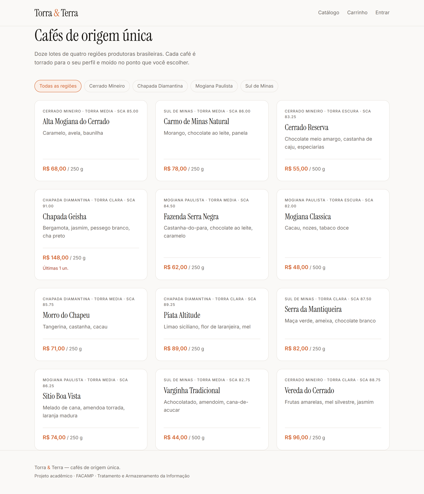
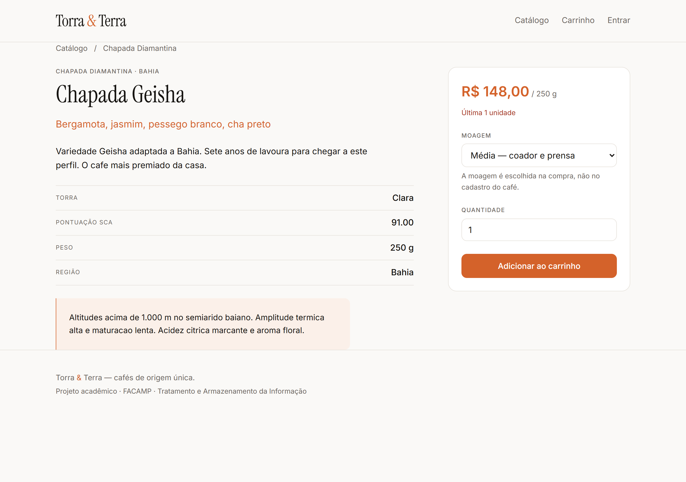
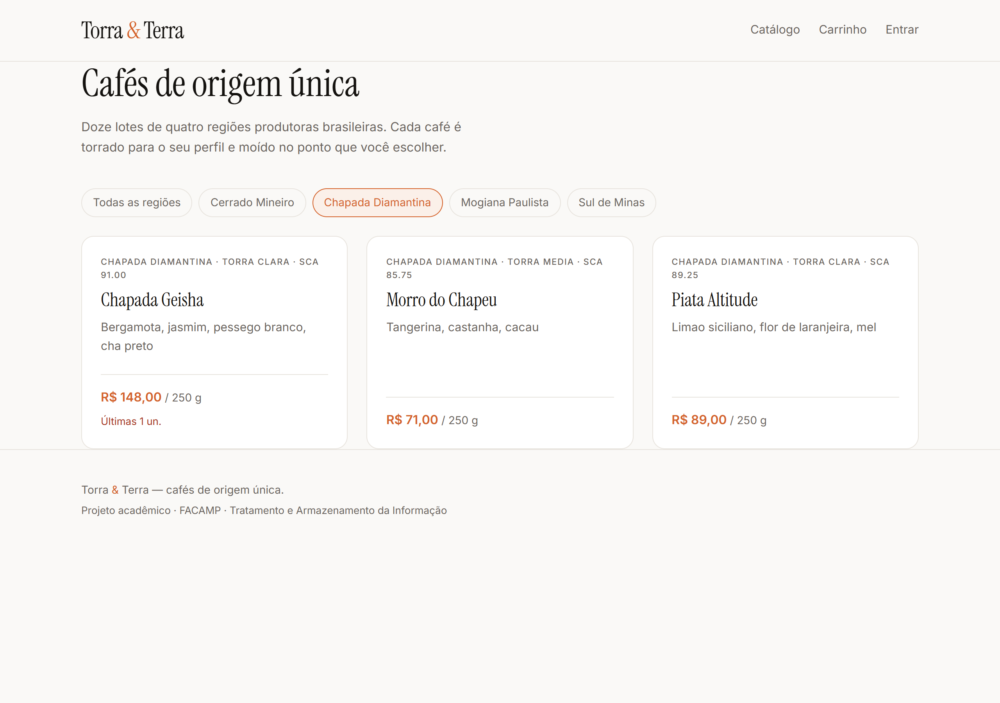
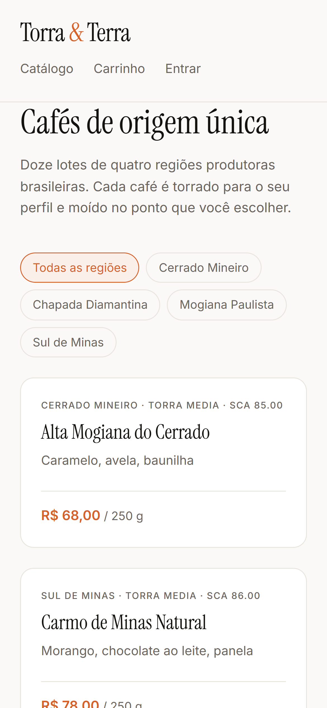
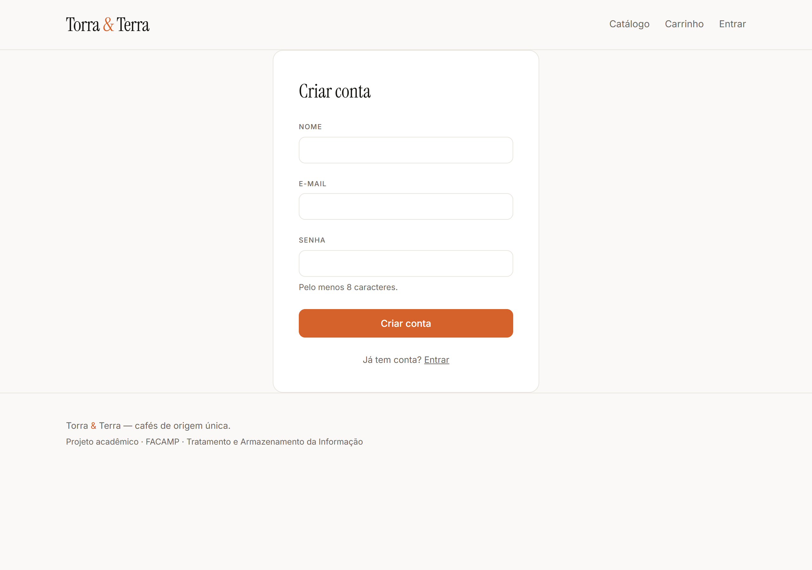
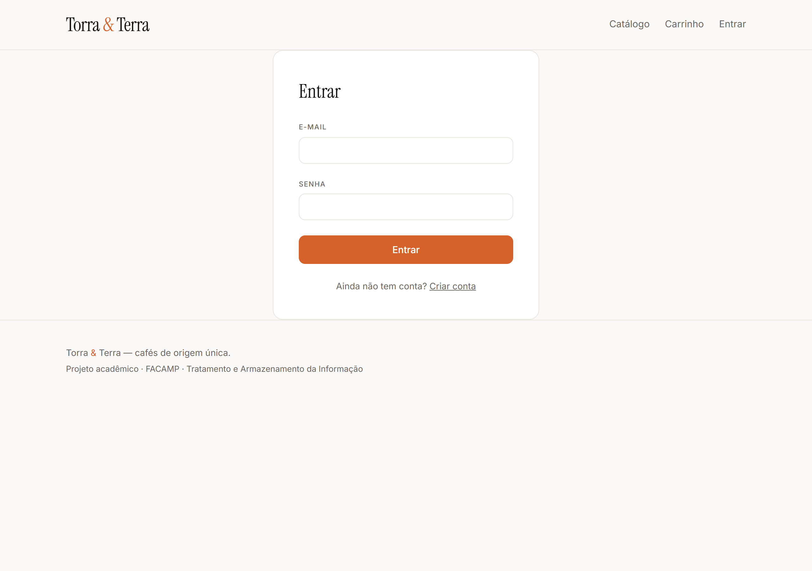
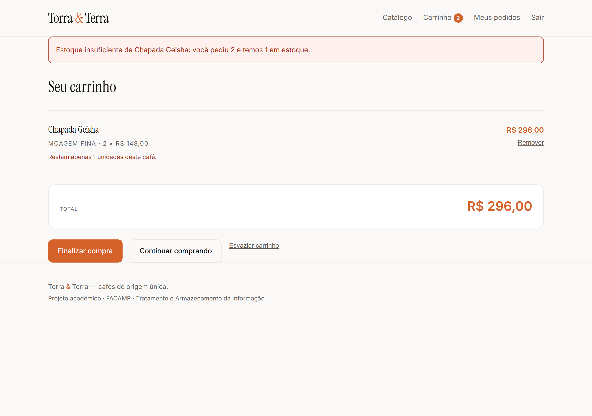
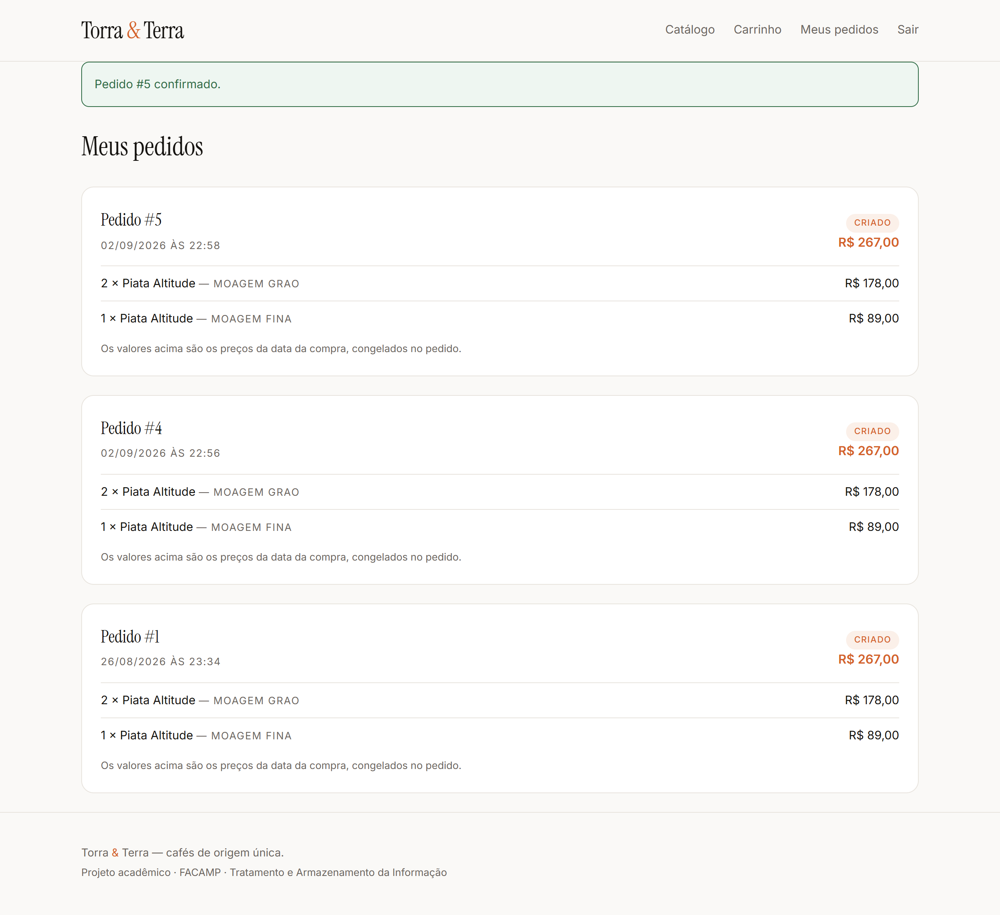

FACAMP · Tratamento e Armazenamento da Informação
E-commerce de café especial em Flask e PostgreSQL.
Do levantamento de requisitos ao deploy em cloud.
Torrefações de café especial vendem por telefone, WhatsApp e planilha. O controle de estoque é manual e o pedido é anotado à mão, o que produz duas dores recorrentes: o mesmo lote vendido duas vezes porque duas vendas aconteceram em paralelo, e o pedido gravado pela metade — cabeçalho sem itens, ou total que não corresponde aos itens.
A pergunta central: como estruturar uma loja que liste os cafés, monte um carrinho e conclua o pedido com integridade garantida pelo banco de dados?
itens_pedido ser uma entidade de verdade, e não uma mera tabela
de ligação. O tema foi escolhido para tornar essa distinção concreta e demonstrável.
| Ator | Objetivo | No MVP |
|---|---|---|
| Cliente | Encontrar cafés, escolher moagem, concluir a compra | sim |
| Operação | Controlar estoque, pedidos e clientes | parcial — o estoque baixa sozinho, mas não há tela |
| Gestão | Relatórios de vendas e volume | fora |
| ID | Requisito | Status |
|---|---|---|
RF01 | Catálogo lendo do banco, com filtro por região | entregue |
RF02 | Detalhe do produto: nota sensorial, torra, SCA | entregue |
RF03 | Carrinho com escolha de quantidade e moagem | entregue |
RF04 | Cadastro e login, senha em hash | entregue |
RF05 | Checkout transacional com baixa de estoque | entregue |
RF06 | Meus pedidos, com os itens de cada pedido | entregue |
Cinco tabelas. As cardinalidades saem direto do domínio: um cliente faz vários pedidos; um pedido tem no mínimo um item; o mesmo café aparece em vários pedidos ao longo do tempo; cada café pertence a uma região.
clientes(id, nome, email UNIQUE, senha_hash, criado_em)
categorias(id, nome UNIQUE, regiao, descricao)
produtos(id, nome, descricao, preco, estoque, categoria_id,
torra, nota_sensorial, pontuacao_sca, peso_g)
pedidos(id, cliente_id, status, total, criado_em)
itens_pedido(id, pedido_id, produto_id, quantidade,
preco_unitario, moagem)
À primeira vista pedidos e produtos teriam um relacionamento
N:N, resolvido por uma tabela de ligação. Não é o caso: itens_pedido tem
atributos próprios — quantidade, preco_unitario e
moagem — que não pertencem nem ao pedido nem ao produto. Isso a promove de
tabela de ligação a entidade associativa. É a diferença entre "estes
produtos estão neste pedido" e "esta quantidade deste café, moída assim, custou isto
naquele dia".
| Forma | Como é atendida |
|---|---|
| 1FN | Campos atômicos. Os itens do pedido são linhas em itens_pedido, não uma lista dentro de pedidos. |
| 2FN | Na chave natural (pedido_id, produto_id, moagem), nenhum atributo depende de parte dela. nome_do_produto não está no item — é lido por JOIN. |
| 3FN | categorias existe separada por isso. Se a descrição da região morasse em produtos, haveria id → regiao → descricao: dependência transitiva, com redundância e anomalias de inserção, atualização e exclusão. |
itens_pedido.preco_unitario
duplica um dado que também está em produtos.preco — e isso não viola a
normalização, porque os dois têm significados diferentes: um é "quanto custa hoje", o
outro é "quanto custou naquela compra". É um fato histórico independente. Se o pedido
lesse produtos.preco, o histórico se reescreveria a cada reajuste e o
total gravado deixaria de bater com a soma dos itens.
O SQL/schema.sql é DDL escrito à mão, executável no psql.
db.create_all() não é chamado em lugar nenhum do projeto. A razão é direta:
a validação do formulário protege a experiência do usuário; a constraint protege o
dado. Se amanhã alguém inserir um registro por um script, um
INSERT manual ou uma futura API, a regra continua valendo.
Check
11
Foreign key
4
Primary key
5
Unique
3
As onze CHECK, como o banco as guarda
ck_clientes_email_formato (POSITION(('@'::text) IN (email)) > 1)
ck_itens_moagem moagem = ANY (ARRAY['GRAO','MEDIA','FINA'])
ck_itens_preco (preco_unitario >= (0)::numeric)
ck_itens_quantidade (quantidade > 0)
ck_pedidos_status status = ANY (ARRAY['CRIADO','PAGO','ENVIADO','CANCELADO'])
ck_pedidos_total (total >= (0)::numeric)
ck_produtos_estoque (estoque >= 0)
ck_produtos_peso (peso_g > 0)
ck_produtos_preco (preco >= (0)::numeric)
ck_produtos_sca (pontuacao_sca >= 80 AND pontuacao_sca <= 100)
ck_produtos_torra torra = ANY (ARRAY['CLARA','MEDIA','ESCURA'])
ck_produtos_sca. Café especial,
pela definição da SCA, pontua 80 ou mais. Isso não é preferência de interface — é o que
define o produto. É regra de negócio pura, e por isso mora no banco.
Ponto flutuante binário não representa 0,10 de forma exata, e o erro se
acumula ao somar os itens de um pedido. Todos os campos monetários são
NUMERIC(10,2).
| Índice | Consulta que o motiva |
|---|---|
idx_produtos_nome | Ordenação do catálogo — a consulta mais executada da aplicação |
idx_produtos_categoria | Filtro por região. O PostgreSQL não indexa coluna de FK automaticamente |
idx_pedidos_cliente | Histórico do cliente — cresce sem limite ao longo do tempo |
idx_itens_pedido | O JOIN que monta o detalhe de cada pedido |
Índice acelera leitura, mas encarece escrita e ocupa disco. Criar "por precaução" é custo sem benefício.
O coração do trabalho. Tudo-ou-nada, em duas fases dentro de uma única transação.
BEGIN │ ├─ FASE 1 — travar e validar TODOS os itens │ ├─ SELECT ... FOR UPDATE (em ordem crescente de id) │ ├─ o produto ainda existe? │ └─ o estoque cobre a quantidade? │ ├─ FASE 2 — gravar │ ├─ INSERT do pedido │ ├─ INSERT de cada item, com preco_unitario congelado │ └─ UPDATE do estoque │ └─ COMMIT · ROLLBACK em qualquer falha
Nada é inserido antes da validação terminar. A fase 1 trava e confere todos os itens; só depois a fase 2 grava. O rollback continua obrigatório, mas o banco trabalha menos no caminho de erro.
Os produtos são travados em ordem crescente de id. Duas
compras simultâneas que travassem os mesmos cafés em ordens opostas ficariam em
deadlock, cada uma esperando o lock da outra. Ordenar elimina o ciclo antes que
ele exista.
O SELECT ... FOR UPDATE é o que impede vender o mesmo lote duas
vezes. Sem ele, duas compras simultâneas leem o mesmo estoque 1, ambas aprovam,
e o café é vendido em dobro.
max igual ao estoque, e o
navegador se recusa a enviar mais que isso; 2) a aplicação valida
dentro da transação, com a linha já travada; 3) a constraint
estoque >= 0 é a última barreira, mesmo que as duas primeiras falhem.

R$ 0,00. O aviso de estoque baixo aparece automaticamente.

idx_produtos_categoria.


A demonstração mais importante do trabalho. O café Chapada Geisha nasce no
seed.sql com estoque 1, de propósito.

A prova de que nada foi gravado
-- antes da tentativa pedidos = 0 itens_pedido = 0 Chapada Geisha: estoque = 1 -- depois da tentativa que falhou pedidos = 0 itens_pedido = 0 <- idênticos Chapada Geisha: estoque = 1 <- intacto pedidos órfãos (sem item) = 0
INSERT soltos.

O que o banco guardou
-- o pedido #5 | Demonstracao TAI | CRIADO | R$ 267,00 | 02/09/2026 22:58 -- os itens: duas linhas do mesmo café, moagens diferentes pedido #5 | Piata Altitude | 2x | moagem GRAO | R$ 89,00 | subtotal R$ 178,00 pedido #5 | Piata Altitude | 1x | moagem FINA | R$ 89,00 | subtotal R$ 89,00 -- o total bate com a soma dos itens divergências: 0 -- e o estoque desceu Piata Altitude: 18 → 15
moagem fosse coluna de
produtos, isso seria impossível sem duplicar o cadastro do café — e o
controle de estoque, que é do café e não da moagem, quebraria.
platform win32 -- Python 3.11.9, pytest-8.3.4 collected 24 items tests/test_checkout.py ............ [ 50%] tests/test_seguranca.py ............ [100%] ========================= 24 passed in 71.25s =========================
Os testes rodam contra um PostgreSQL real, não SQLite: o
SELECT ... FOR UPDATE e as constraints CHECK são justamente o
que precisa ser testado, e o SQLite trata os dois de forma diferente. Testar contra
outro banco daria confiança falsa.
| Caso | O que prova |
|---|---|
| Compra normal | Pedido e itens gravados, estoque reduzido |
| Estoque insuficiente | Rollback total, nada gravado, mensagem nomeando o café |
| Produto inexistente | Pedido não é finalizado |
| Preço negativo · estoque negativo · SCA fora da faixa · moagem inválida | As constraints do banco recusam |
| Senha | Nunca gravada em texto puro |
| Mesmo café, duas moagens | itens_pedido é entidade |
| Preço congelado | Reajuste não altera pedido antigo |
| CSRF e cabeçalhos (12 testes) | As proteções de segurança seguem ativas |
| Consulta | Plano escolhido |
|---|---|
WHERE categoria_id = 4 | Index Scan usando idx_produtos_categoria |
WHERE cliente_id = 2 | Bitmap Index Scan usando idx_pedidos_cliente |
ORDER BY nome, sem filtro | Seq Scan + Sort |
idx_produtos_nome passa a compensar quando o
Sort não couber mais em memória.
A aplicação foi submetida a uma varredura com OWASP ZAP, que apontou 11 alertas. Oito eram acionáveis e foram corrigidos.
| Alerta | Correção |
|---|---|
| Ausência de tokens Anti-CSRF | Token na sessão, campo escondido nos 6 formulários, validado em before_request |
| Cookie sem SameSite | SameSite=Lax |
| Cookie sem flag Secure | Secure, condicional a produção |
| CSP não definido | script-src 'none' e origens restritas |
| Anti-clickjacking | X-Frame-Options: DENY |
| HSTS | max-age=31536000; includeSubDomains |
| X-Content-Type-Options | nosniff |
| Cache-control | no-store nas páginas de cliente logado |
Sem token CSRF e sem SameSite, um site malicioso visitado por um cliente
logado poderia disparar um POST para /checkout usando o cookie
dele — o navegador anexa o cookie automaticamente, e não sabe distinguir um formulário
nosso de um de outro site. O pedido sairia de verdade.
script-src 'none' — e torna XSS praticamente inviável: não há onde um
script injetado executar.
<link> do Google Fonts. SRI trava o hash do
arquivo no HTML, e o fonts.googleapis.com serve CSS diferente
conforme o navegador — o hash mudaria por visitante e a página quebraria para
parte deles. A mitigação adotada é o próprio CSP, que restringe style-src e
font-src a esses dois domínios. A correção definitiva seria hospedar as
fontes junto com a aplicação.
werkzeug.security)DATABASE_URL e SECRET_KEY por variável de ambiente; .env no .gitignore e nunca versionadotorra_app, sem SUPERUSER — verificado: DROP TABLE é negadoBackup só é confiável quando a restauração também é testada.
pg_dump -F c → 23 KB origem → 12 produtos · 4 categorias · 2 clientes · 2 pedidos · 3 itens restaurado em banco novo → contagens IDÊNTICAS constraints no destino → 11 CHECK · 4 FK · 5 PK · 3 UNIQUE · 26 NOT NULL índices no destino → 4 de 4 -- e a regra ainda funciona no banco restaurado: ERROR: new row for relation "produtos" violates check constraint "ck_produtos_preco"
Não voltou só a estrutura — a regra de negócio voltou ativa.
pg_dump local era 17.5 e
o servidor do Railway é 18.6 — o pg_dump se recusa a dumpar um servidor mais
novo que ele, porque formatos internos mudam entre versões maiores. A solução foi rodar o
dump de dentro do container do banco, onde as ferramentas são da versão exata.
| Aplicação | Railway · gunicorn via Procfile |
| Banco | PostgreSQL 18.6 gerenciado, no mesmo projeto |
| Domínio | nivaldo.felipefurlan.com.br, HTTPS com Let's Encrypt |
| Versionamento | GitHub, 23 commits — um por etapa |
O material sugere Render + Neon; optamos pelo Railway porque hospeda aplicação e banco
no mesmo projeto, ligados por reference variable, e o critério de avaliação é
agnóstico de ferramenta. A migração seria barata: o Render lê o mesmo Procfile
e o Neon entrega a DATABASE_URL no mesmo formato, que o app.py já
normaliza.
push não está
ativo. O repositório pertence a outra conta do GitHub e o Railway respondeu de forma
explícita ao tentar criar o gatilho: "no one in the project has access to it".
Depende de o dono do repositório autorizar a Railway GitHub App. Enquanto isso, o deploy
é disparado manualmente e funciona normalmente.
CRIADOseed.sql